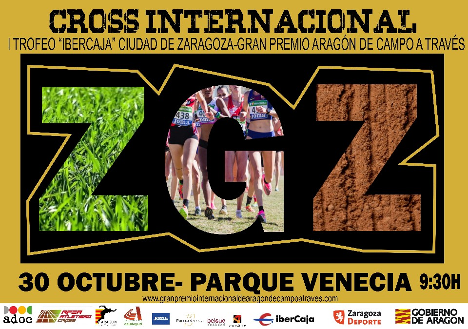

CARRERAS CLASIFICACIONES INICIAR SESIÓN
30 OCT 2022, ZARAGOZA
Información |
Inscripciones |
|
| Inscripciones | CATEGORIAS INFANTILES SUB 8/10/12/14/1630/10/2022 12:30 1km |
|
| Reglamento | PRUEBA POPULAR ATLETAS NO FEDERADOS30/10/2022 14:00 6km |
|
| Info del contacto | CATEGORIAS INFANTILES SUB 8/10/12/14/1630/10/2022 09:30 9km |
|
|  | ¿QUIERES SER VOLUNTARIO? INSCRIBETE30/10/2022 08:30 1km |
|
Justificante |
Información de contacto |
| DESCARGAR JUSTIFICANTE | Contactar con el organizador - 677413688 |
Información básica |
|
Horario y lugar de la prueba |
|
| PARQUE DEL BARRANCO (DETRAS DE POLICÍA LOCAL, CERCA DE PARQUE VENECIA) | |
Recogida del dorsal |
|
| TIENDA JOMA PUERTO VENECIA | |
| SÁBADO 29 DE 11:00H A 13:00H | |
| 16:00 A 20:00H | |
| EXEPCIONALMENTE EL DOMINGO SE PODRÁ RECOGER EN LA SALIDA HASTA UNA HORA ANTES DE LA PRUEBA EN LA QUE PARTICIPAS | |
Política de devoluciones |
|
| NO HABRÁ DEVOLUCIONES NI CAMBIO DE DORSAL | |
El próximo día 30 de octubre de 2022 se celebrará en Zaragoza de Campo a Través "Gran premio Gobierno de Aragón, prueba que será clasificatoria para el Campeonato de España de Clubes de campo a través 2022. El Club de Atletismo Calatayud promueve y organiza este evendo deportivo, con la colaboración de la RFEA y FAA